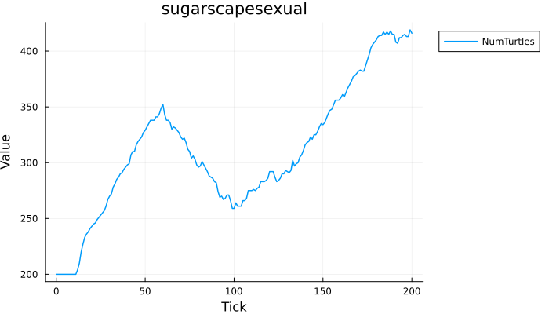
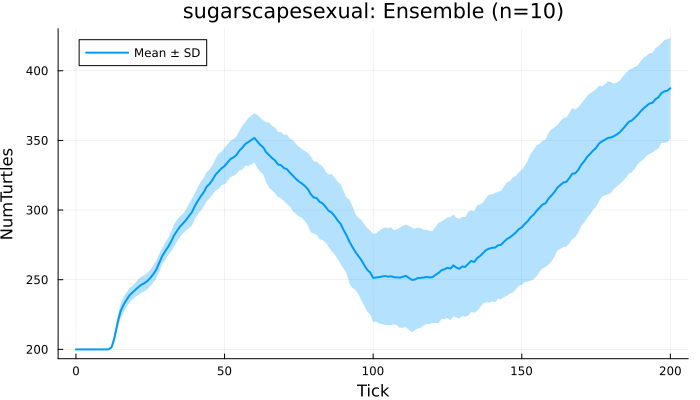
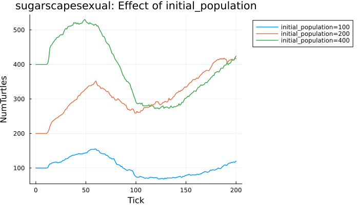

Sugarscape Sexual
Overview
WHAT IS IT?
This model in the NetLogo Sugarscape suite implements Epstein & Axtell’s Sugarscape Sexual reproduction, as described in chapter 3 of their book Growing Artificial Societies: Social Science from the Bottom Up. It simulates a population with limited, spatially-distributed resources available and 2 differents sex distrbuted among population. In order to can reproduce each turtle must be from different sex and have enough amount of sugar and their age must be in the range of fertility variable.
HOW IT WORKS
The rules are similar to Sugarscape constant grow, in adition each individual has a defined sex, that could be female or male. If an individual finds another turtle from different sex and in a reproductive age and with enough amount of sugar and the turtle is near the caller and there is an empty patch near them, then thay can offspring. Vision and metabolism are passed through generations by random chance or the vision from one parent or the metabolism from the other.
THINGS TO NOTICE
The world has a carrying capacity, which is lower than the initial population of the world. Agents who are born in sugarless places or who consume more sugar than the land cannot be supported by the world, and die. Other agents die from competition - although some places in the world have enough sugar to support them, the sugar supply is limited and other agents may reach and consume it first.
As the population stabilizes, the average vision increases while the average metabolism decreases. Agents with lower vision cannot find the better sugar patches, while agents with high metabolism cannot support themselves. The death of these agents causes the attribute averages to change.
You can watch different demographic regimes going through time; inheritance follows mendelian rules.
THINGS TO TRY
Population grows and shrinks until reach some kind of stable state. You can try with different initial populations and test some hypothesis about the influence of this initial state in the final state.
EXTENDING THE MODEL
As mentiones by Axtell & Epstein you can change the way of agent reproduction and avoid reproduction among members of the same family or you can change the sugar inheritance rule once one of the parents die (in current implementation that amount of sugar is vanished from the board).
NETLOGO FEATURES
We use here the matrix extension to build the sugar world.
RELATED MODELS
Other models in the NetLogo Sugarscape suite include:
- Sugarscape 1 Immediate Growback
- Sugarscape 3 Wealth Distribution
- Sugarscape 4 Seasonal Migration
- Sugarscape 5 Cultural Dynamics
- Sugarscape 6 Sexual Reproduction
CREDITS AND REFERENCES
Epstein, J. and Axtell, R. (1996). Growing Artificial Societies: Social Science from the Bottom Up. Washington, D.C.: Brookings Institution Press.
HOW TO CITE
If you mention this model or the NetLogo software in a publication, we ask that you include the citations below.
For the model itself:
- Diaz Cordova, D, (2023). Netlogo Sugarscape 6. Sexual Reproduction. Universidad Nacional de Lanús. Argentina.
Please cite the NetLogo software as:
- Wilensky, U. (1999). NetLogo. http://ccl.northwestern.edu/netlogo/. Center for Connected Learning and Computer-Based Modeling, Northwestern University, Evanston, IL.
COPYRIGHT AND LICENSE
Copyright 2009 Uri Wilensky.

This work is licensed under the Creative Commons Attribution-NonCommercial-ShareAlike 3.0 License. To view a copy of this license, visit https://creativecommons.org/licenses/by-nc-sa/3.0/ or send a letter to Creative Commons, 559 Nathan Abbott Way, Stanford, California 94305, USA.
Commercial licenses are also available. To inquire about commercial licenses, please contact Uri Wilensky at uri@northwestern.edu.
Parameters
| Parameter | Type | Default | Description |
|---|---|---|---|
initial_population | Int | 200 | initial population |
grid_width | Int | 50 | grid width |
grid_height | Int | 50 | grid height |
max_ticks | Int | 200 | max ticks |
Source Code
The Julia code to run this model:
using ArkModelZoo
_, trajectory = run_sugarscapesexual()Time Series

Ensemble Runs
Ten replicates with different random seeds, showing mean ± standard deviation.

Parameter Sensitivity
Varying initial_population.

Appendix: Source Code
This model is implemented in the Ark.jl Entity-Component-System (ECS) framework. The code is split into five files, each with a distinct role:
- Parameters: a mutable struct holding all configurable values.
- Components: lightweight data types attached to individual entities (agents).
- Resources: world-level shared state accessible to all systems.
- Systems: functions that operate on entities each tick, defining model behavior.
- Model: wiring that assembles the world, registers resources and systems, and provides the run entry point.
Parameters (parameters.jl)
The parameter struct uses @kwdef so that every field has a default value and can be overridden by keyword. These defaults match the original NetLogo model’s slider settings.
Base.@kwdef mutable struct SSParams
initial_population::Int = 200
grid_width::Int = 50
grid_height::Int = 50
max_ticks::Int = 200
seed::Int = 42
endComponents (components.jl)
Components are lightweight data types attached to individual entities (agents). Mutable structs hold per-entity state, while empty tag structs act as markers for the ECS query system to efficiently filter entities.
struct SSDummy endResources (resources.jl)
Resources are world-level singletons shared across all systems, used for global state and aggregate statistics.
# Row r of the matrix corresponds to NetLogo y = 50-r (row 1 = top, row 50 = bottom).
# During init: max_psugar[x, y] = SS_SUGAR_LANDSCAPE[51-y, x]
const SS_SUGAR_LANDSCAPE = [
0 0 0 0 0 0 0 0 0 0 0 0 0 0 0 0 0 0 1 1 1 1 1 1 1 1 1 2 2 2 2 2 2 2 2 2 3 3 3 3 3 3 2 2 2 2 2 2 2 2;
0 0 0 0 0 0 0 0 0 0 0 0 0 0 0 0 0 0 1 1 1 1 1 1 1 1 2 2 2 2 2 2 2 2 3 3 3 3 3 3 3 3 3 3 2 2 2 2 2 2;
0 0 0 0 0 0 0 0 0 0 0 0 0 0 0 0 0 1 1 1 1 1 1 1 1 2 2 2 2 2 2 2 3 3 3 3 3 3 3 3 3 3 3 3 3 3 2 2 2 2;
0 0 0 0 0 0 0 0 0 0 0 0 0 0 0 0 0 1 1 1 1 1 1 1 1 2 2 2 2 2 2 3 3 3 3 3 3 3 3 3 3 3 3 3 3 3 3 2 2 2;
0 0 0 0 0 0 0 0 0 0 0 0 0 0 0 0 0 1 1 1 1 1 1 1 2 2 2 2 2 2 3 3 3 3 3 3 3 3 3 3 3 3 3 3 3 3 3 3 2 2;
0 0 0 0 0 0 0 0 0 0 0 0 0 0 0 0 1 1 1 1 1 1 1 1 2 2 2 2 2 2 3 3 3 3 3 3 3 4 4 4 4 3 3 3 3 3 3 3 2 2;
0 0 0 0 0 0 0 0 0 0 0 0 0 0 0 1 1 1 1 1 1 1 1 1 2 2 2 2 2 3 3 3 3 3 3 4 4 4 4 4 4 4 4 3 3 3 3 3 3 2;
0 0 0 0 0 0 0 0 0 0 0 0 0 0 0 1 1 1 1 1 1 1 1 2 2 2 2 2 2 3 3 3 3 3 4 4 4 4 4 4 4 4 4 4 3 3 3 3 3 2;
0 0 0 0 0 0 0 0 0 0 0 0 0 0 1 1 1 1 1 1 1 1 1 2 2 2 2 2 3 3 3 3 3 3 4 4 4 4 4 4 4 4 4 4 3 3 3 3 3 3;
0 0 0 0 0 0 0 0 0 0 0 0 0 1 1 1 1 1 1 1 1 1 1 2 2 2 2 2 3 3 3 3 3 4 4 4 4 4 4 4 4 4 4 4 4 3 3 3 3 3;
0 0 0 0 0 0 0 0 0 0 0 0 1 1 1 1 1 1 1 1 1 1 2 2 2 2 2 2 3 3 3 3 3 4 4 4 4 4 4 4 4 4 4 4 4 3 3 3 3 3;
0 0 0 0 0 0 0 0 0 0 0 1 1 1 1 1 1 1 1 1 1 1 2 2 2 2 2 2 3 3 3 3 3 4 4 4 4 4 4 4 4 4 4 4 4 3 3 3 3 3;
0 0 0 0 0 0 0 0 0 0 1 1 1 1 1 1 1 1 1 1 1 1 2 2 2 2 2 2 3 3 3 3 3 4 4 4 4 4 4 4 4 4 4 4 4 3 3 3 3 3;
0 0 0 0 0 0 0 0 0 1 1 1 1 1 1 1 1 1 1 1 1 1 2 2 2 2 2 2 3 3 3 3 3 3 4 4 4 4 4 4 4 4 4 4 3 3 3 3 3 3;
0 0 0 0 0 0 0 1 1 1 1 1 1 1 1 1 1 1 1 1 1 2 2 2 2 2 2 2 3 3 3 3 3 3 4 4 4 4 4 4 4 4 4 4 3 3 3 3 3 2;
0 0 0 0 0 1 1 1 1 1 1 1 1 1 1 1 1 1 1 1 2 2 2 2 2 2 2 2 3 3 3 3 3 3 3 4 4 4 4 4 4 4 4 3 3 3 3 3 3 2;
1 1 1 1 1 1 1 1 1 1 1 1 1 1 1 1 1 1 1 2 2 2 2 2 2 2 2 2 3 3 3 3 3 3 3 3 3 4 4 4 4 3 3 3 3 3 3 3 2 2;
1 1 1 1 1 1 1 1 1 1 1 1 1 1 1 1 1 1 2 2 2 2 2 2 2 2 2 2 2 3 3 3 3 3 3 3 3 3 3 3 3 3 3 3 3 3 3 3 2 2;
1 1 1 1 1 1 1 1 1 1 1 1 1 1 1 2 2 2 2 2 2 2 2 2 2 2 2 2 2 3 3 3 3 3 3 3 3 3 3 3 3 3 3 3 3 3 3 2 2 2;
1 1 1 1 1 1 1 1 1 1 2 2 2 2 2 2 2 2 2 2 2 2 2 2 2 2 2 2 2 2 3 3 3 3 3 3 3 3 3 3 3 3 3 3 3 3 2 2 2 2;
1 1 1 1 1 1 1 1 2 2 2 2 2 2 2 2 2 2 2 2 2 2 2 2 2 2 2 2 2 2 2 3 3 3 3 3 3 3 3 3 3 3 3 3 2 2 2 2 2 2;
1 1 1 1 1 1 2 2 2 2 2 2 2 2 2 2 2 2 2 2 2 2 2 2 2 2 2 2 2 2 2 2 2 3 3 3 3 3 3 3 3 3 2 2 2 2 2 2 2 2;
1 1 1 1 2 2 2 2 2 2 2 2 2 2 2 2 2 2 2 2 2 2 2 2 2 2 2 2 2 2 2 2 2 2 2 2 2 2 2 2 2 2 2 2 2 2 2 2 2 1;
1 1 1 2 2 2 2 2 2 2 2 2 2 2 2 2 2 2 2 2 2 2 2 2 2 2 2 2 2 2 2 2 2 2 2 2 2 2 2 2 2 2 2 2 2 2 2 2 1 1;
1 1 2 2 2 2 2 2 2 2 2 2 3 3 3 3 3 3 3 3 3 2 2 2 2 2 2 2 2 2 2 2 2 2 2 2 2 2 2 2 2 2 2 2 2 2 2 1 1 1;
1 2 2 2 2 2 2 2 2 2 3 3 3 3 3 3 3 3 3 3 3 3 3 2 2 2 2 2 2 2 2 2 2 2 2 2 2 2 2 2 2 2 2 2 2 1 1 1 1 1;
1 2 2 2 2 2 2 2 3 3 3 3 3 3 3 3 3 3 3 3 3 3 3 3 2 2 2 2 2 2 2 2 2 2 2 2 2 2 2 2 2 2 1 1 1 1 1 1 1 1;
2 2 2 2 2 2 2 3 3 3 3 3 3 3 3 3 3 3 3 3 3 3 3 3 3 2 2 2 2 2 2 2 2 2 2 2 2 2 1 1 1 1 1 1 1 1 1 1 1 1;
2 2 2 2 2 2 3 3 3 3 3 3 3 3 3 3 3 3 3 3 3 3 3 3 3 2 2 2 2 2 2 2 2 2 2 2 2 1 1 1 1 1 1 1 1 1 1 1 1 1;
2 2 2 2 2 2 3 3 3 3 3 3 3 4 4 4 4 3 3 3 3 3 3 3 3 3 2 2 2 2 2 2 2 2 2 2 1 1 1 1 1 1 1 1 1 1 1 1 1 1;
2 2 2 2 2 3 3 3 3 3 3 4 4 4 4 4 4 4 4 3 3 3 3 3 3 3 2 2 2 2 2 2 2 2 2 2 1 1 1 1 1 1 1 1 1 1 1 0 0 0;
2 2 2 2 2 3 3 3 3 3 4 4 4 4 4 4 4 4 4 4 3 3 3 3 3 3 2 2 2 2 2 2 2 2 1 1 1 1 1 1 1 1 1 1 1 1 0 0 0 0;
2 2 2 2 3 3 3 3 3 3 4 4 4 4 4 4 4 4 4 4 3 3 3 3 3 3 2 2 2 2 2 2 2 2 1 1 1 1 1 1 1 1 1 1 0 0 0 0 0 0;
2 2 2 2 3 3 3 3 3 4 4 4 4 4 4 4 4 4 4 4 4 3 3 3 3 3 2 2 2 2 2 2 1 1 1 1 1 1 1 1 1 1 0 0 0 0 0 0 0 0;
2 2 2 2 3 3 3 3 3 4 4 4 4 4 4 4 4 4 4 4 4 3 3 3 3 3 2 2 2 2 2 2 1 1 1 1 1 1 1 1 1 1 0 0 0 0 0 0 0 0;
2 2 2 2 3 3 3 3 3 4 4 4 4 4 4 4 4 4 4 4 4 3 3 3 3 3 2 2 2 2 2 2 1 1 1 1 1 1 1 1 1 0 0 0 0 0 0 0 0 0;
2 2 2 2 3 3 3 3 3 4 4 4 4 4 4 4 4 4 4 4 4 3 3 3 3 3 2 2 2 2 2 1 1 1 1 1 1 1 1 1 0 0 0 0 0 0 0 0 0 0;
2 2 2 2 3 3 3 3 3 3 4 4 4 4 4 4 4 4 4 4 3 3 3 3 3 3 2 2 2 2 2 1 1 1 1 1 1 1 1 0 0 0 0 0 0 0 0 0 0 0;
2 2 2 2 2 3 3 3 3 3 4 4 4 4 4 4 4 4 4 4 3 3 3 3 3 2 2 2 2 2 2 1 1 1 1 1 1 1 1 0 0 0 0 0 0 0 0 0 0 0;
2 2 2 2 2 3 3 3 3 3 3 4 4 4 4 4 4 4 4 3 3 3 3 3 3 2 2 2 2 2 1 1 1 1 1 1 1 1 0 0 0 0 0 0 0 0 0 0 0 0;
2 2 2 2 2 2 3 3 3 3 3 3 3 4 4 4 4 3 3 3 3 3 3 3 2 2 2 2 2 2 1 1 1 1 1 1 1 0 0 0 0 0 0 0 0 0 0 0 0 0;
2 2 2 2 2 2 3 3 3 3 3 3 3 3 3 3 3 3 3 3 3 3 3 3 2 2 2 2 2 2 1 1 1 1 1 1 1 0 0 0 0 0 0 0 0 0 0 0 0 0;
2 2 2 2 2 2 2 3 3 3 3 3 3 3 3 3 3 3 3 3 3 3 3 2 2 2 2 2 2 1 1 1 1 1 1 1 1 0 0 0 0 0 0 0 0 0 0 0 0 0;
1 2 2 2 2 2 2 2 3 3 3 3 3 3 3 3 3 3 3 3 3 3 2 2 2 2 2 2 1 1 1 1 1 1 1 1 1 0 0 0 0 0 0 0 0 0 0 0 0 0;
1 2 2 2 2 2 2 2 2 2 3 3 3 3 3 3 3 3 3 3 2 2 2 2 2 2 2 2 1 1 1 1 1 1 1 1 1 0 0 0 0 0 0 0 0 0 0 0 0 0;
1 1 2 2 2 2 2 2 2 2 2 2 3 3 3 3 3 3 2 2 2 2 2 2 2 2 2 1 1 1 1 1 1 1 1 1 1 0 0 0 0 0 0 0 0 0 0 0 0 0;
1 1 1 2 2 2 2 2 2 2 2 2 2 2 2 2 2 2 2 2 2 2 2 2 2 2 1 1 1 1 1 1 1 1 1 1 0 0 0 0 0 0 0 0 0 0 0 0 0 0;
1 1 1 1 2 2 2 2 2 2 2 2 2 2 2 2 2 2 2 2 2 2 2 2 2 1 1 1 1 1 1 1 1 1 1 1 0 0 0 0 0 0 0 0 0 0 0 0 0 0;
1 1 1 1 1 1 2 2 2 2 2 2 2 2 2 2 2 2 2 2 2 2 2 1 1 1 1 1 1 1 1 1 1 1 1 1 0 0 0 0 0 0 0 0 0 0 0 0 0 0;
1 1 1 1 1 1 1 1 2 2 2 2 2 2 2 2 2 2 2 2 2 1 1 1 1 1 1 1 1 1 1 1 1 1 1 0 0 0 0 0 0 0 0 0 0 0 0 0 0 0;
]
mutable struct SSAgent
x::Int
y::Int
sugar::Float64
metabolism::Int
vision::Int
sexo::Int # 0=female, 1=male
edad::Int # age
muerte::Int # death age
fertilidadc::Int # fertility start
fertilidadf::Int # fertility end
dotacion::Float64 # initial endowment
alive::Bool
end
mutable struct SSWorld
width::Int
height::Int
psugar::Matrix{Int}
max_psugar::Matrix{Int}
agents::Vector{SSAgent}
occupant::Matrix{Int} # 0=empty, positive=agent index
end
function SSWorld(w::Int, h::Int)
SSWorld(w, h, zeros(Int, w, h), zeros(Int, w, h), SSAgent[], zeros(Int, w, h))
end
mutable struct SSStats
num_turtles::Int
end
SSStats() = SSStats(0)Systems (systems.jl)
Systems contain the model logic and execute in a defined order each tick. Each system struct implements either initialize! (run once at setup) or update! (run every tick).
# --- Initialization ---
struct InitSSSystem <: System end
function initialize!(::InitSSSystem, world::World)
params = get_resource(world, SSParams)
rng = get_resource(world, RNGResource).rng
ssworld = get_resource(world, SSWorld)
stats = get_resource(world, SSStats)
w, h = ssworld.width, ssworld.height
# Load landscape: row 1 of matrix = top (y=h), row h = bottom (y=1)
for x in 1:w, y in 1:h
val = SS_SUGAR_LANDSCAPE[h + 1 - y, x]
ssworld.max_psugar[x, y] = val
ssworld.psugar[x, y] = val
end
# Create agents at random unoccupied patches
for _ in 1:params.initial_population
# Find an unoccupied patch
px, py = rand(rng, 1:w), rand(rng, 1:h)
while ssworld.occupant[px, py] != 0
px, py = rand(rng, 1:w), rand(rng, 1:h)
end
sug = Float64(rand(rng, 50:100))
met = rand(rng, 1:4)
vis = rand(rng, 1:6)
sexo = rand(rng, 0:1)
muerte = 60 + rand(rng, 0:39)
fertilidadc = 12 + rand(rng, 0:2)
fertilidadf = sexo == 1 ? 50 + rand(rng, 0:9) : 40 + rand(rng, 0:9)
agent = SSAgent(px, py, sug, met, vis, sexo, 0, muerte, fertilidadc, fertilidadf, sug, true)
push!(ssworld.agents, agent)
ssworld.occupant[px, py] = length(ssworld.agents)
end
stats.num_turtles = length(ssworld.agents)
return nothing
end
# --- Main Go System ---
struct SSGoSystem <: System end
function update!(::SSGoSystem, world::World)
rng = get_resource(world, RNGResource).rng
ssworld = get_resource(world, SSWorld)
stats = get_resource(world, SSStats)
w, h = ssworld.width, ssworld.height
agents = ssworld.agents
# If no alive agents → terminate
nalive = count(a -> a.alive, agents)
if nalive == 0
get_resource(world, Terminate).stop = true
return nothing
end
# Growback
for x in 1:w, y in 1:h
if ssworld.psugar[x, y] < ssworld.max_psugar[x, y]
ssworld.psugar[x, y] = min(ssworld.max_psugar[x, y], ssworld.psugar[x, y] + 1)
end
end
# Process agents in shuffled order (snapshot of current alive agents)
alive_indices = [i for i in 1:length(agents) if agents[i].alive]
Random.shuffle!(rng, alive_indices)
for idx in alive_indices
agent = agents[idx]
!agent.alive && continue
# Move
_ss_move!(agent, ssworld, rng, idx)
# Eat
agent.sugar = agent.sugar - agent.metabolism + ssworld.psugar[agent.x, agent.y]
ssworld.psugar[agent.x, agent.y] = 0
# Death: sugar
if agent.sugar <= 0
agent.alive = false
ssworld.occupant[agent.x, agent.y] = 0
continue
end
# Death: age
if agent.edad == agent.muerte
agent.alive = false
ssworld.occupant[agent.x, agent.y] = 0
continue
end
# Age
agent.edad += 1
# Reproduction
if agent.edad >= agent.fertilidadc && agent.edad <= agent.fertilidadf && agent.sugar >= agent.dotacion
_ss_sexear!(agent, ssworld, rng, idx)
end
end
# Compact: remove dead agents, rebuild occupant grid
filter!(a -> a.alive, agents)
_ss_rebuild_occupant!(ssworld)
stats.num_turtles = length(agents)
return nothing
end
# --- Movement: vision-based cardinal search ---
function _ss_move!(agent::SSAgent, ssworld::SSWorld, rng, agent_idx::Int)
w, h = ssworld.width, ssworld.height
best_sugar = -1
best_dist = w + h
candidates = Tuple{Int,Int}[]
for (dx, dy) in ((0, 1), (1, 0), (0, -1), (-1, 0))
for d in 1:agent.vision
nx = mod1(agent.x + dx * d, w)
ny = mod1(agent.y + dy * d, h)
ssworld.occupant[nx, ny] != 0 && continue
s = ssworld.psugar[nx, ny]
if s > best_sugar || (s == best_sugar && d < best_dist)
best_sugar = s
best_dist = d
empty!(candidates)
push!(candidates, (nx, ny))
elseif s == best_sugar && d == best_dist
push!(candidates, (nx, ny))
end
end
end
isempty(candidates) && return
cx, cy = candidates[rand(rng, 1:length(candidates))]
ssworld.occupant[agent.x, agent.y] = 0
ssworld.occupant[cx, cy] = agent_idx
agent.x = cx
agent.y = cy
end
# --- Reproduction ---
function _ss_sexear!(agent::SSAgent, ssworld::SSWorld, rng, agent_idx::Int)
w, h = ssworld.width, ssworld.height
agents = ssworld.agents
dirs = ((0, 1), (1, 0), (0, -1), (-1, 0))
# Find neighbor4 agents of opposite sex
neighbor_indices = Int[]
for (dx, dy) in dirs
nx = mod1(agent.x + dx, w)
ny = mod1(agent.y + dy, h)
occ = ssworld.occupant[nx, ny]
if occ > 0 && agents[occ].alive && agents[occ].sexo != agent.sexo
push!(neighbor_indices, occ)
end
end
Random.shuffle!(rng, neighbor_indices)
for ni in neighbor_indices
neighbor = agents[ni]
# Check neighbor fertility
neighbor.alive || continue
(neighbor.edad >= neighbor.fertilidadc && neighbor.edad <= neighbor.fertilidadf && neighbor.sugar >= neighbor.dotacion) || continue
# Re-check self fertility (sugar may have dropped from prior birth)
(agent.sugar >= agent.dotacion) || return
born = false
birth_x, birth_y = 0, 0
# Try from neighbor's side
for (dx, dy) in dirs
born && break
bx = mod1(neighbor.x + dx, w)
by = mod1(neighbor.y + dy, h)
if ssworld.occupant[bx, by] == 0
birth_x, birth_y = bx, by
born = true
end
end
# Try from own side
if !born
for (dx, dy) in dirs
born && break
bx = mod1(agent.x + dx, w)
by = mod1(agent.y + dy, h)
if ssworld.occupant[bx, by] == 0
birth_x, birth_y = bx, by
born = true
end
end
end
if born
child_metabolism = rand(rng, Bool) ? agent.metabolism : neighbor.metabolism
child_vision = rand(rng, Bool) ? agent.vision : neighbor.vision
child_sexo = rand(rng, 0:1)
child_muerte = 60 + rand(rng, 0:39)
child_fertilidadc = 12 + rand(rng, 0:2)
child_fertilidadf = child_sexo == 1 ? 50 + rand(rng, 0:9) : 40 + rand(rng, 0:9)
child_sugar = agent.dotacion / 2.0 + neighbor.dotacion / 2.0
child_dotacion = child_sugar
child = SSAgent(
birth_x, birth_y,
child_sugar, child_metabolism, child_vision,
child_sexo, 0, child_muerte,
child_fertilidadc, child_fertilidadf,
child_dotacion, true,
)
push!(agents, child)
ssworld.occupant[birth_x, birth_y] = length(agents)
# Parents pay sugar cost
agent.sugar -= agent.dotacion / 2.0
neighbor.sugar -= neighbor.dotacion / 2.0
end
end
end
# --- Rebuild occupant grid ---
function _ss_rebuild_occupant!(ssworld::SSWorld)
fill!(ssworld.occupant, 0)
for (i, agent) in enumerate(ssworld.agents)
if agent.alive
ssworld.occupant[agent.x, agent.y] = i
end
end
end
# --- Termination ---
struct SSTerminationSystem <: System end
function update!(::SSTerminationSystem, world::World)
params = get_resource(world, SSParams)
tick = get_resource(world, Tick)
ssworld = get_resource(world, SSWorld)
nalive = count(a -> a.alive, ssworld.agents)
if nalive == 0 || tick.tick + 1 >= params.max_ticks
get_resource(world, Terminate).stop = true
end
return nothing
endModel (model.jl)
The model file assembles all pieces: it creates the ECS World with the required component types, registers resources, builds the Scheduler with systems in execution order, and exposes the public run entry point. The observer pattern records the trajectory each tick.
function sugarscapesexual_world(; initial_capacity::Int = 1024)
return World(SSDummy; initial_capacity = initial_capacity, allow_mutable = true)
end
function sugarscapesexual_systems()
return (
InitSSSystem(),
SSGoSystem(),
SSTerminationSystem(),
)
end
function sugarscapesexual_model(params::SSParams = SSParams())
world = sugarscapesexual_world()
_add_standard_resources!(world, params)
add_resource!(world, SSWorld(params.grid_width, params.grid_height))
add_resource!(world, SSStats())
scheduler = Scheduler(world, sugarscapesexual_systems())
initialize!(scheduler)
return scheduler
end
struct SSObserver end
function sugarscapesexual_headers(::SSObserver)
return ["NumTurtles"]
end
function sugarscapesexual_values(::SSObserver, world::World)
stats = get_resource(world, SSStats)
return Float64[stats.num_turtles]
end
function run_sugarscapesexual(; params::SSParams = SSParams(), observe::Bool = true)
return _run_model(sugarscapesexual_model, SSObserver(), sugarscapesexual_values; params, observe)
end